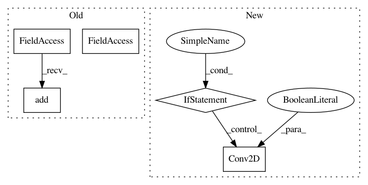

2318052dc79966bf36675606b7d992a347418292,gluoncv/model_zoo/nasnet.py,BranchSeparablesReduction,__init__,#BranchSeparablesReduction#Any#Any#Any#Any#Any#Any#Any#,113
Before Change
stride, padding, use_bias=use_bias)
self.body = nn.HybridSequential(prefix="")
self.body.add(nn.BatchNorm(momentum=0.1, epsilon=0.001))
self.body.add(nn.Activation("relu"))
self.body.add(SeparableConv2d(in_channels, out_channels, kernel_size,
1, padding, use_bias=use_bias))
self.body.add(nn.BatchNorm(momentum=0.1, epsilon=0.001))
After Change
self.body.add(nn.Conv2D(channels, kernel_size=1, strides=1, use_bias=use_bias))
def hybrid_forward(self, F, x):
x = self.body(x)
return x
class BranchSeparables(HybridBlock):
def __init__(self, in_channels, out_channels, kernel_size, stride, padding,
norm_layer, norm_kwargs, use_bias=False):
super(BranchSeparables, self).__init__()
self.body = nn.HybridSequential(prefix="")
self.body.add(nn.Activation("relu"))
In pattern: SUPERPATTERN
Frequency: 3
Non-data size: 5
Instances
Project Name: dmlc/gluon-cv
Commit Name: 2318052dc79966bf36675606b7d992a347418292
Time: 2019-01-07
Author: cheungchih@gmail.com
File Name: gluoncv/model_zoo/nasnet.py
Class Name: BranchSeparablesReduction
Method Name: __init__
Project Name: dmlc/gluon-cv
Commit Name: 2318052dc79966bf36675606b7d992a347418292
Time: 2019-01-07
Author: cheungchih@gmail.com
File Name: gluoncv/model_zoo/nasnet.py
Class Name: BranchSeparables
Method Name: __init__
Project Name: dmlc/gluon-cv
Commit Name: ea5306a4e8fc9700022f93c3731fb1711e248a8e
Time: 2019-08-09
Author: jerryzh.cn@gmail.com
File Name: gluoncv/model_zoo/resnext.py
Class Name: Block
Method Name: __init__